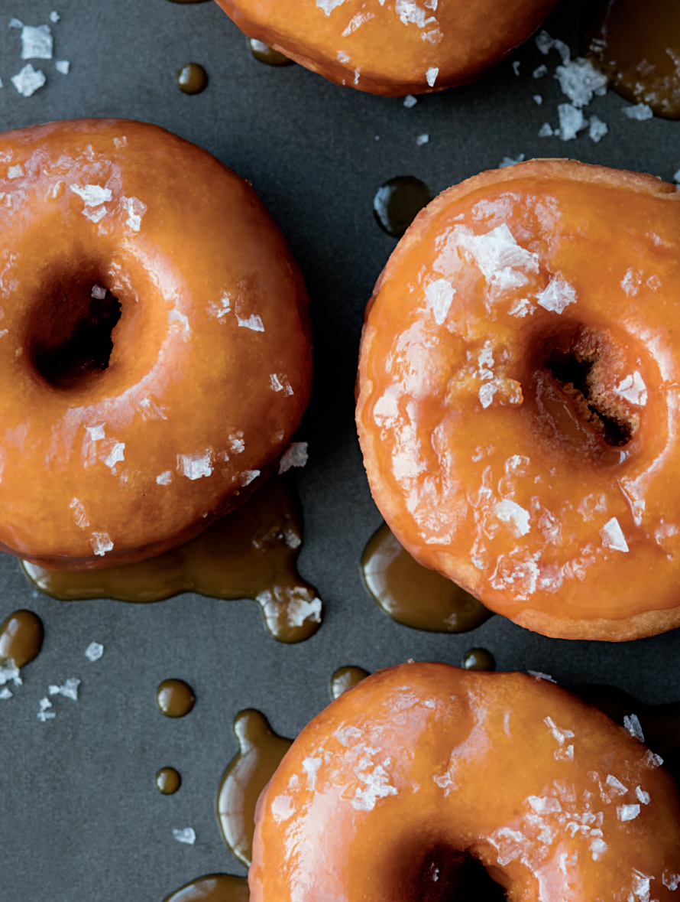

Salted Caramel Doughnuts
What started as salted caramel candies in Brittany has blossomed into
a mini industry of salted caramel–flavored ice cream, sauce, cakes, and
now doughnuts. Fleur de sel or Maldon sea salt is a good choice here.

Ingredients
- 1 recipe Vanilla Old-Fashioned Doughnuts
(page 46)
- 11⁄2 cups sugar
- 1 teaspoon fresh
lemon juice
- 11⁄2 cups heavy cream
- 11⁄2 teaspoons flaky sea
salt, plus more for garnish
- Canola oil, for frying
Steps
- Make the vanilla doughnut dough and knead. Roll it
out to 1
⁄2-inch thickness, cut out doughnuts and holes,
and refrigerate.
- Meanwhile, in a saucepan, stir together the sugar, lemon
juice, and 1
⁄4 cup water. Place over medium heat and cook,
stirring continuously, until the mixture bubbles vigorously
and turns a golden amber color, 7–9 minutes. Remove from
the heat and immediately and very carefully add the cream;
the mixture will bubble and splatter. Stir until the sauce
is smooth, then stir in the sea salt. Let cool until warm.
- To fry the doughnuts, see Successful Frying (page 14).
Heat the oil over medium-high until it registers 360°F
on a deep-frying thermometer. When the doughnuts are
cooked through (cut one open to test), 1–2 minutes per
side (holes take less time), use a slotted spoon to transfer
to a cooling rack or prepared baking sheet. Let cool for
5 minutes. Dip the doughnuts, top side down, into the
caramel sauce. Garnish with sea salt and serve.